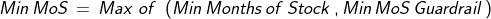
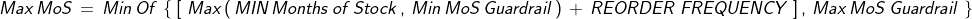
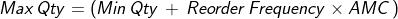

La matriz del estado de las existencias (global) proporciona una vista general, basada en cuadrículas, del estado de las existencias (Meses de Existencias (MOS) o Cantidad) para una única unidad de planificación o unidad de equivalencia en varios programas, unidades de planificación y períodos. Para ver el estado de las existencias en distintas unidades de planificación y a lo largo del tiempo dentro de un único programa del plan de suministro, consulte la Matriz del estado de las existencias.
Para obtener más explicaciones sobre el saldo final, AMC, MOS mínimo/máximo y la cantidad, consulte la pantalla "Mostrar guía" en el Informe del plan de suministro o el Manual del usuario (Informes sobre el estado de las existencias y el Anexo 2).
Cada unidad de planificación se puede planificar por MOS o Cantidad, y el estado de sus existencias se determina según la configuración de la unidad de planificación. Los administradores del programa pueden actualizar la configuración "Proyectado Por" (MOS o Cantidad) en la pantalla "Configuraciones de Unidades de Planificación".
Codificación de colores del estado de existencias
Las celdas están codificadas por colores según el estado de las existencias mediante la codificación de colores que se muestra en la leyenda.
Consumo Mensual Promedio (AMC)
*Considere sólo valores distintos de cero. Además, el mes actual está incluido en los meses para futuros del AMC.
Si el informe incluye varios programas o unidades de planificación, el AMC de los programas/unidades de planificación seleccionados se agregará (sumará) en una única cantidad total.
Meses de Existencias (MOS)
Si el informe incluye varios programas o unidades de planificación:
Meses de existencias = (suma del saldo final de los programas/unidades de planificación seleccionados / suma del AMC de los programas/unidades de planificación seleccionados)
Ejemplo:
Programa A Saldo Final = 10,000
Programa A AMC = 2,500
Programa B Saldo Final = 6,000
Programa B AMC = 3,000
Programa C Saldo Final = 750
Programa C AMC = 250
Meses de existencias = (10,000 + 6,000 + 750) / (2,500 + 3,000 + 250)
Meses de existencias = 2.91
Min/Max Meses de existencias


Si el informe incluye múltiples programas o unidades de planificación,
Ejemplo:
Programa A min MOS = 3
Programa A max MOS = 6
Programa B min MOS = 5
Programa B max MOS = 12
Agregado mínimo MOS = Promedio (3, 5) = 4
Agregado máximo MOS = Promedio (6, 12) = 9
Min/Max Cantidad
Cantidad mínima = definida por el usuario en la configuración del programa

Tenga en cuenta que la cantidad máxima cambia por mes a medida que el AMC cambia por mes.
Si el informe incluye múltiples programas o unidades de planificación,
Ejemplo:
Programa A Cantidad mínima = 3,000
Programa A Cantidad máxima = 6,000
Programa B Cantidad mínima = 5,000
Programa B Cantidad máxima = 12,000
Cantidad Mínima Agregada = Promedio (3000, 5000) = 4000
Cantidad Máxima Agregada = Promedio (6000, 12000) = 9000
Casilla de verificación de Mostrar la Cantidad
Si no está marcada (por defecto), las existencias se muestran por meses de existencias (MOS) para aquellas unidades planificadas por MOS y como cantidades para aquellas planificadas por cantidad. Si se selecciona, el inventario se muestra por cantidad, independientemente de la configuración de "Proyectado por". Cuando el inventario se muestra por cantidad, el valor representa el inventario principal o inventario proyectado disponible al final del mes.
Casilla de verificación para mostrar icono
Si está marcado (predeterminado), se muestran los iconos de envío y caducidad. Se muestra un icono de envío para cada mes con uno (o más) envíos, sin incluir los envíos cancelados, retenidos o inactivos. Se muestra un icono de vencimiento para cada mes con un vencimiento proyectado.
Casillas de Verificación de Retiro de Envíos
Estas casillas de verificación le permiten simular diferentes escenarios de stock excluyendo determinados envíos (p. ej., planificados, sin fondos) del inventario proyectado.